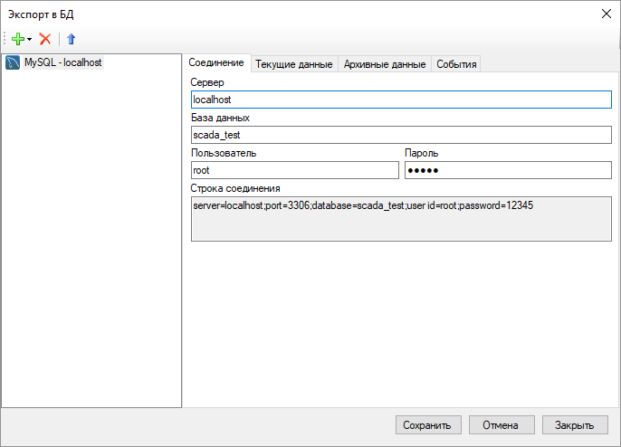
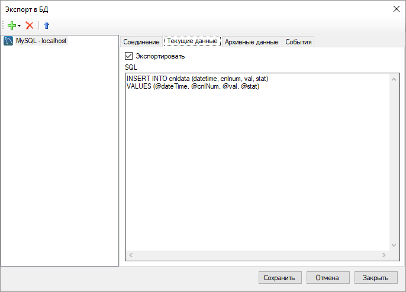
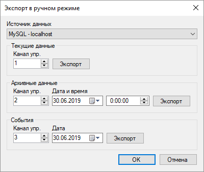

Модуль экспорта в БД
Обзор
Модуль позволяет в реальном времени экспортировать данные, поступающие от устройств, в популярные базы данных. Поддерживаются СУБД Microsoft SQL Server, Oracle, PostgreSQL и MySQL. Модуль экспорта входит в дистрибутив Rapid SCADA и отдельная установка модуля не требуется. Файл библиотеки модуля - ModDBExport.dll.
Конфигурирование
В проекте необходимо перейти на страницу Модули, активировать модуль ModDBExport.dll и открыть его свойства. Модуль поддерживает экспорт в несколько различных баз данных параллельно. Чтобы добавить базу данных, нажмите кнопку  . На странице Соединение указываются параметры соединения с БД. На страницах Текущие данные, Архивные данные и События необходимо указать SQL-запросы, которые вызывает модуль при получении Сервером новых данных. БД, в которую происходит экспорт, должна быть предварительно создана и содержать соответствующие таблицы для хранения информации.
. На странице Соединение указываются параметры соединения с БД. На страницах Текущие данные, Архивные данные и События необходимо указать SQL-запросы, которые вызывает модуль при получении Сервером новых данных. БД, в которую происходит экспорт, должна быть предварительно создана и содержать соответствующие таблицы для хранения информации.


Если часть данных не была своевременно экспортирована, например, при недоступности БД, то данные можно передать в ручном режиме. Форма экспорта в ручном режиме открывается с помощью конопки  . Чтобы ручной экспорт был возможен, в базе конфигурации должны быть созданы каналы управления, которые затем указываются на форме.
. Чтобы ручной экспорт был возможен, в базе конфигурации должны быть созданы каналы управления, которые затем указываются на форме.

Примеры таблиц и SQL запросов
Microsoft SQL Server
-- Удалить таблицу данных входных каналов, если она существует
IF OBJECT_ID('CnlData', 'U') IS NOT NULL
DROP TABLE CnlData;
-- Создать таблицу данных входных каналов
CREATE TABLE CnlData (
DateTime datetime2 NOT NULL,
CnlNum int NOT NULL,
Val float NOT NULL,
Stat int NOT NULL,
PRIMARY KEY (DateTime, CnlNum)
);
CREATE INDEX idx_CnlData_CnlNum ON CnlData (CnlNum);
-- Удалить таблицу событий, если она существует
IF OBJECT_ID('Events', 'U') IS NOT NULL
DROP TABLE Events;
-- Создать таблицу событий
CREATE TABLE Events (
DateTime datetime2 NOT NULL,
ObjNum int NOT NULL,
KPNum int NOT NULL,
ParamID int NOT NULL,
CnlNum int NOT NULL,
OldCnlVal float NOT NULL,
OldCnlStat int NOT NULL,
NewCnlVal float NOT NULL,
NewCnlStat int NOT NULL,
Checked bit NOT NULL,
UserID int NOT NULL,
Descr char(100),
Data char(50)
);
CREATE INDEX idx_Events_DateTime ON Events (DateTime);
CREATE INDEX idx_Events_ObjNum ON Events (ObjNum);
CREATE INDEX idx_Events_KPNum ON Events (KPNum);
CREATE INDEX idx_Events_CnlNum ON Events (CnlNum);
-- Вставить текущие данные
INSERT INTO CnlData (DateTime, CnlNum, Val, Stat)
VALUES (@dateTime, @cnlNum, @val, @stat)
-- Вставить или обновить существующие архивные данные
MERGE CnlData AS target
USING (SELECT @dateTime, @cnlNum) AS source (DateTime, CnlNum)
ON (target.DateTime = source.DateTime AND target.CnlNum = source.CnlNum)
WHEN MATCHED THEN
UPDATE SET Val = @val, Stat = @stat
WHEN NOT MATCHED THEN
INSERT (DateTime, CnlNum, Val, Stat)
VALUES (@dateTime, @cnlNum, @val, @stat);
-- Вставить событие
INSERT INTO Events (DateTime, ObjNum, KPNum, ParamID, CnlNum, OldCnlVal, OldCnlStat, NewCnlVal, NewCnlStat, Checked, UserID, Descr, Data)
VALUES (@dateTime, @objNum, @kpNum, @paramID, @cnlNum, @oldCnlVal, @oldCnlStat, @newCnlVal, @newCnlStat, @checked, @userID, @descr, @data)
Oracle
-- Удалить таблицу данных входных каналов, если она существует
BEGIN
EXECUTE IMMEDIATE 'DROP TABLE cnldata';
EXCEPTION
WHEN OTHERS THEN
IF SQLCODE != -942 THEN
RAISE;
END IF;
END;
-- Создать таблицу данных входных каналов
CREATE TABLE cnldata (
datetime TIMESTAMP NOT NULL,
cnlnum INTEGER NOT NULL,
val FLOAT NOT NULL,
stat INTEGER NOT NULL,
PRIMARY KEY (datetime, cnlnum)
);
CREATE INDEX idx_cnldata_cnlnum ON cnldata (cnlnum);
-- Удалить таблицу событий, если она существует
BEGIN
EXECUTE IMMEDIATE 'DROP TABLE events';
EXCEPTION
WHEN OTHERS THEN
IF SQLCODE != -942 THEN
RAISE;
END IF;
END;
-- Создать таблицу событий
CREATE TABLE events (
datetime TIMESTAMP NOT NULL,
objnum INTEGER NOT NULL,
kpnum INTEGER NOT NULL,
paramid INTEGER NOT NULL,
cnlnum INTEGER NOT NULL,
oldcnlval FLOAT NOT NULL,
oldcnlstat INTEGER NOT NULL,
newcnlval FLOAT NOT NULL,
newcnlstat INTEGER NOT NULL,
checked INTEGER NOT NULL,
userid INTEGER NOT NULL,
descr CHAR(100),
data CHAR(50)
);
CREATE INDEX idx_events_datetime ON events (datetime);
CREATE INDEX idx_events_objnum ON events (objnum);
CREATE INDEX idx_events_kpnum ON events (kpnum);
CREATE INDEX idx_events_cnlnum ON events (cnlnum);
-- Вставить текущие данные
INSERT INTO cnldata (datetime, cnlnum, val, stat)
VALUES (:dateTime, :cnlNum, @val, :stat)
-- Вставить или обновить существующие архивные данные
MERGE INTO cnldata
USING dual ON (datetime = :dateTime AND cnlnum = :cnlnum)
WHEN MATCHED THEN
UPDATE SET val = :val, stat = :stat
WHEN NOT MATCHED THEN
INSERT (datetime, cnlnum, val, stat)
VALUES (:dateTime, :cnlNum, :val, :stat)
-- Вставить событие
INSERT INTO events (datetime, objnum, kpnum, paramid, cnlnum, oldcnlval, oldcnlstat, newcnlval, newcnlstat, checked, userid, descr, data)
VALUES (:dateTime, :objNum, :kpNum, :paramID, :cnlNum, :oldCnlVal, :oldCnlStat, :newCnlVal, :newCnlStat, :checked, :userID, :descr, :data)
PostgreSQL
-- Удалить таблицу данных входных каналов, если она существует
DROP TABLE IF EXISTS cnldata;
-- Создать таблицу данных входных каналов
CREATE TABLE cnldata (
datetime timestamp NOT NULL,
cnlnum integer NOT NULL,
val double precision NOT NULL,
stat integer NOT NULL,
PRIMARY KEY (datetime, cnlnum)
);
CREATE INDEX ON cnldata (cnlnum);
-- Удалить таблицу событий, если она существует
DROP TABLE IF EXISTS events;
-- Создать таблицу событий
CREATE TABLE events (
datetime timestamp NOT NULL,
objnum integer NOT NULL,
kpnum integer NOT NULL,
paramid integer NOT NULL,
cnlnum integer NOT NULL,
oldcnlval double precision NOT NULL,
oldcnlstat integer NOT NULL,
newcnlval double precision NOT NULL,
newcnlstat integer NOT NULL,
checked boolean NOT NULL,
userid integer NOT NULL,
descr char(100),
data char(50)
);
CREATE INDEX ON events (datetime);
CREATE INDEX ON events (objnum);
CREATE INDEX ON events (kpnum);
CREATE INDEX ON events (cnlnum);
-- Вставить текущие данные
INSERT INTO cnldata (datetime, cnlnum, val, stat)
VALUES (@dateTime, @cnlNum, @val, @stat)
-- Вставить или обновить существующие архивные данные
WITH upsert AS (UPDATE cnldata SET val = @val, stat = @stat
WHERE datetime = @datetime AND cnlnum = @cnlNum RETURNING *)
INSERT INTO cnldata (datetime, cnlnum, val, stat)
SELECT @dateTime, @cnlNum, @val, @stat
WHERE NOT EXISTS (SELECT * FROM upsert)
-- Вставить событие
INSERT INTO events (datetime, objnum, kpnum, paramid, cnlnum, oldcnlval, oldcnlstat, newcnlval, newcnlstat, checked, userid, descr, data)
VALUES (@dateTime, @objNum, @kpNum, @paramID, @cnlNum, @oldCnlVal, @oldCnlStat, @newCnlVal, @newCnlStat, @checked, @userID, @descr, @data)
MySQL
-- Удалить таблицу данных входных каналов, если она существует
DROP TABLE IF EXISTS cnldata;
-- Создать таблицу данных входных каналов
CREATE TABLE cnldata (
datetime DATETIME NOT NULL,
cnlnum INT NOT NULL,
val DOUBLE NOT NULL,
stat SMALLINT UNSIGNED NOT NULL,
PRIMARY KEY (datetime, cnlnum)
) ENGINE=InnoDB;
CREATE INDEX idx_cnldata_cnlnum ON cnldata (cnlnum);
-- Удалить таблицу событий, если она существует
DROP TABLE IF EXISTS events;
-- Создать таблицу событий
CREATE TABLE events (
datetime DATETIME NOT NULL,
objnum INT NOT NULL,
kpnum INT NOT NULL,
paramid INT NOT NULL,
cnlnum INT NOT NULL,
oldcnlval DOUBLE NOT NULL,
oldcnlstat SMALLINT UNSIGNED NOT NULL,
newcnlval DOUBLE NOT NULL,
newcnlstat SMALLINT UNSIGNED NOT NULL,
checked TINYINT UNSIGNED NOT NULL,
userid INT NOT NULL,
descr CHAR(100),
data CHAR(50)
) ENGINE=InnoDB;
CREATE INDEX idx_events_datetime ON events (datetime);
CREATE INDEX idx_events_objnum ON events (objnum);
CREATE INDEX idx_events_kpnum ON events (kpnum);
CREATE INDEX idx_events_cnlnum ON events (cnlnum);
-- Вставить текущие данные
INSERT INTO cnldata (datetime, cnlnum, val, stat)
VALUES (@dateTime, @cnlNum, @val, @stat)
-- Вставить или обновить существующие архивные данные
INSERT INTO cnldata (datetime, cnlnum, val, stat)
VALUES (@dateTime, @cnlNum, @val, @stat)
ON DUPLICATE KEY UPDATE val = @val, stat = @stat
-- Вставить событие
INSERT INTO events (datetime, objnum, kpnum, paramid, cnlnum, oldcnlval, oldcnlstat, newcnlval, newcnlstat, checked, userid, descr, data)
VALUES (@dateTime, @objNum, @kpNum, @paramID, @cnlNum, @oldCnlVal, @oldCnlStat, @newCnlVal, @newCnlStat, @checked, @userID, @descr, @data)